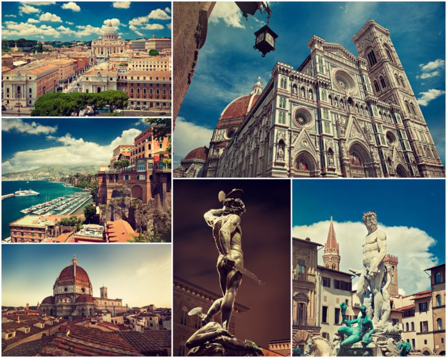

Достопримечательности Италии

Ватикан

Просматривая путеводитель и выбирая, что посмотреть в Италии, нельзя пропустить самый известный в мире
анклав, которым является Ватикан. Каждое здание этого мини-государства является достопримечательностью,
известной далеко за пределами страны. Здесь можно пройтись по аллеям знаменитых Садов Ватикана и своими
глазами увидеть Папу, подняться на купол Собора Святого Петра, посетить Сикстинскую капеллу с ее
бессмертными фресками, созданными Микеланджело, Боттичелли и другими великими живописцами.
Чтобы попасть на территорию Ватикана, следует пройти строгий дресс-код. Гиды в Риме расскажут, какие правила
поведения необходимо соблюдать для избежания неприятностей и недоразумений.
Первой достопримечательностью, которую предлагают посетить гостям, является Собор Святого Петра. Поражают
размеры здания – высота 136 метров, а длина главного нефа – 211 метров. Но главной ценностью здесь являются
многочисленные скульптурные и живописные шедевры, созданные великими мастерами Италии.
В Папском дворце Ватикана можно полюбоваться прекрасными фресками великого Рафаэля. Они украшают потолки и
стены четырех комнат (станцев).
Пантеон (г. Рим)

Выбирая достопримечательности Италии, которые следует обязательно посетить в свой первый приезд, нельзя
пропустить такое монументальное сооружение, как Римский Пантеон. Построенный изначально в 25 году до н.э., он
несколько раз разрушался стихийными бедствиями, перестраивался и даже «сменил вероисповедание». Но до сих пор
сотни людей ежедневно стремятся попасть под его своды, чтобы постоять под куполом, полюбоваться прекрасными
фресками и статуями, ощутить одновременно дыхание вечности и неумолимую разрушительную силу времени.
Величие и красота внутреннего убранства Пантеона поражают. Трудно поверить, что все это создано руками людей, а
не могущественными языческими богами, в честь которых он был возведен.
Пройдя под сводом портика, поддерживаемого 16 мраморными колонами, попадаешь в основное храмовое здание,
которое венчает купол диаметром 43 метра. В его центре имеется большое круглое отверстие, именуемое Небесным
всевидящим оком. По преданию, его пробили злые духи, желая вырваться из священного места в момент начала мессы.
Особенностью проникающего через окулус света является то, что в полдень его лучи не рассеиваются, а опускаются
четко вертикально, образуя своеобразный световой столб и перемещаясь в течение дня от одной статуи к другой,
воздавая им должное.
Стены и алтарь расписаны великолепными фресками, частично созданными мастерами эпохи Возрождения. В
многочисленных нишах установлены статуи, а стены и пол выстланы мозаичной плиткой. В центре храма имеются
скамьи для тех, кто хочет вознести молитву или просто отдохнуть.
Колизей (г. Рим)

Достопримечательности Италии невозможно представить без Колизея. Это огромный амфитеатр, возведенный еще в
72 году н.э. и ставший главным символом Римской империи. Это здание в свое время вмещало 55 тысяч человек, а
слава о нем разносилась далеко за пределы страны.
Своим созданием Колизей обязан императору Титу Флавию Веспасиану, решившему разрушить дворец Нерона, тем
самым искоренив память о нем и прославив себя как мудрого правителя.
Даже при развитии современных технологий и наличия тяжелой строительной техники трудно осуществить
строительство такого грандиозного сооружения. Поэтому, выбирая, что посмотреть в Италии, пропустить
посещение Колизея нельзя.
Его форма представляет собой эллипс, длина которого 188 м, а ширина — 156 м. Прочность конструкции
сохраняется за счет того, что в качестве основного архитектурного элемента выбрана арка, способная
выдерживать колоссальные нагрузки.
Во время представлений над Колизеем натягивался тент, защищавший зрителей от палящего солнца и дождя. Для
этого использовались стоящие на реке Тибр корабли с прикрепленными к ним специальными тросами, которые после
растягивания тента закреплялись на огромных столбах, расположенных с внешней стороны строения.
Многочисленные войны, землетрясения и другие факторы разрушили большую часть Колизея. А начавшаяся прокладка
автомобильных трасс, интенсивное движение транспорта и загазованность воздуха привели к созданию критической
ситуации. Но, к счастью, силами современных архитекторов и строителей удалось сохранить конструкцию здания,
которое в 2007 году было названо одним из Семи Новых чудес света.